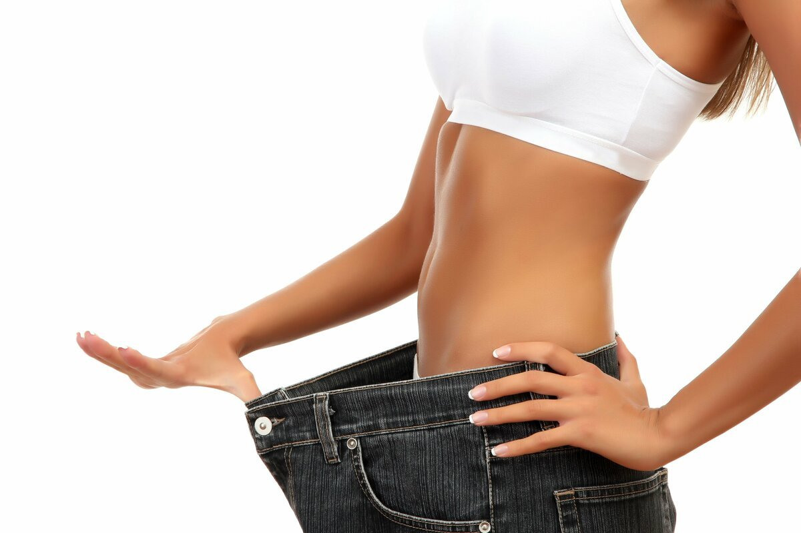

Сбалансированный рацион поможет вам похудеть без вреда для здоровья.
Похудение не такая простая задача как может показаться с виду.
- Если худеть слишком быстро, то организм может остаться без необходимых витаминов и макронутриентов и это может привести к тяжелым последствиям и болезням в будущем. Наш организм можно сравнить с фабрикой по производству. Для лучшего понимания приведу такой пример: если представить что наш организм - это цех по производству запчастей для автомобилей, и если у нас нет материала для производства стекла, то вместо окна из стекла мы сделаем окно из полиэтилена или пластика. Вот только сможет ли это окно выполнять функции, которые выполняло окно из стекла ранее?
- Окисление жиров является еще одной важной задачей при похудении. Так при стремительно быстром похудении организму очень тяжело справиться и вывести метаблолиты, огромная нагрузка ложится на печень. Это может привести к очень плачевным последствиям.
- Наверняка вы сталкивались с тем, что после очередной строгой диеты, спустя непродолжительное время, вы набирали еще больше килограмм. И смотря с ужасом на стрелку весов, не могли понять как же так произошло
Поэтому очень важно понять, что питание при похудении должно быть сбалансированным!
Диагноз ожирение ставится при объеме талии у мужчин более 94 см, у женщин – более 80 см при любом росте. Правильно замерять на уровне пупка надо помнить: мы едим, чтобы жить, а не «мы живем, чтобы есть» наши рекомендации — не кратковременная диета, так должен питаться каждый человек, который хочет быть здоровым, жить дольше и лучше помните, для снижения веса 80% это правильное питание, 20% - физические нагрузки физическую активность можно начинать с ходьбы 30 мин 3 раза в неделю, постепенно увеличивая периодичность и интенсивность тренировок (целевая скорость – 6км/час, ежедневно проходить 3 километра за 30 минут)хорошей интенсивностью считается. Также хорошо помогает велосипед, плавание, бег, игровые виды спорта: волейбол, футбол, баскетбол, теннис. В хорошую погоду предпочтительней заниматься на свежем воздухе, утром, пока есть силы и воздух еще сильно не загрязнен выхлопными газами количество потребляемой жидкости – 30 мл/кг у здоровых людей, 40 мл/кг – у людей с ожирением, но не более 4 литров в сутки. Стараться пить щелочную негазированную воду, рН которой приближается к 7. Щелочное или кислое состояние воды можно определить по специальным тест-полоскам для ротовой полости, которые продаются в аптеках. Вот некоторые примеры рН воды, замеренные нами: Эльбруссия – 7,0; Аква Домбай – 6,5; Пилигримм – 4,5; родники Кавказа – 4,5; Горная Вершина – 4,5 (из этого следует, что предпочтение отдаётся Эльбруссии из Черкесска и Аква Домбай) питание должно быть разнообразным и сбалансированным. Из белковых продуктов предпочтение отдаётся мясу красных жирных сортов (говядина, баранина), рыба (желательная дикая, не фермерская которая выращена вне воли), яйца, кисломолочные продукты. Исключить полностью быстрые углеводы (сладости, сладкие напитки, изделия из белой муки). Восполнять углеводы за счет овощей и фруктов, лучше в свежем виде ложиться спать не позднее 22.30, продолжительность сна не менее 7-8 часов. Гормон сна мелатонин является жиросжигателем. Спать надо в хорошо проветриваемой комнате со свежим воздухом, при температуре +19 градусов
Автор: Иванова Елена
Задать вопрос:
Елена Иванова
Мое очень важное мнение по данной статье. Мое очень важное мнение по данной статье. Мое очень важное мнение по данной статье. Мое очень важное мнение по данной статье. Мое очень важное мнение по данной статье.Записаться на первичную бесплатную консультацию
+ 7 (905) 729 68 02
Последние статьи
Раз пост
Какой-то вступительный текст. Какой-то вступительный текст. Какой-то вступительный текст.
Ссылка на статьюДва пост
Какой-то вступительный текст. Какой-то вступительный текст. Какой-то вступительный текст.
Ссылка на статьюТри пост
Какой-то вступительный текст. Какой-то вступительный текст. Какой-то вступительный текст.
Ссылка на статьюЧетыре пост
Какой-то вступительный текст. Какой-то вступительный текст. Какой-то вступительный текст.
Ссылка на статьюПять пост
Какой-то вступительный текст. Какой-то вступительный текст. Какой-то вступительный текст.
Ссылка на статью